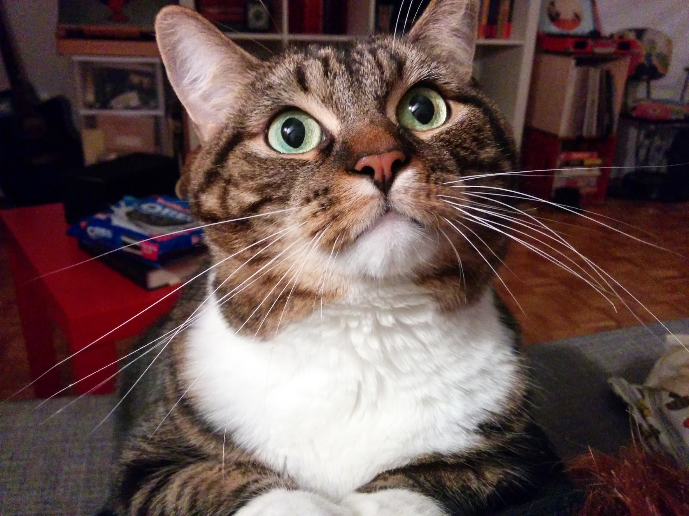
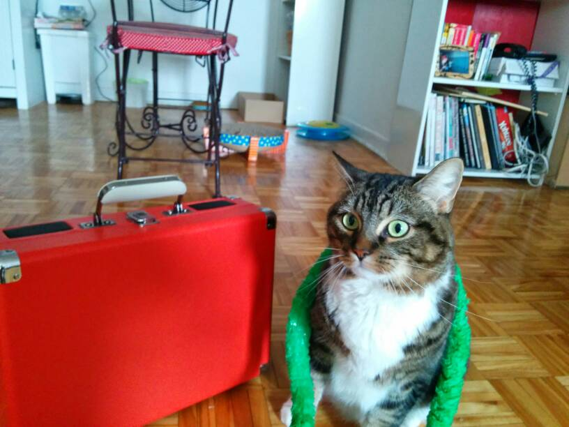
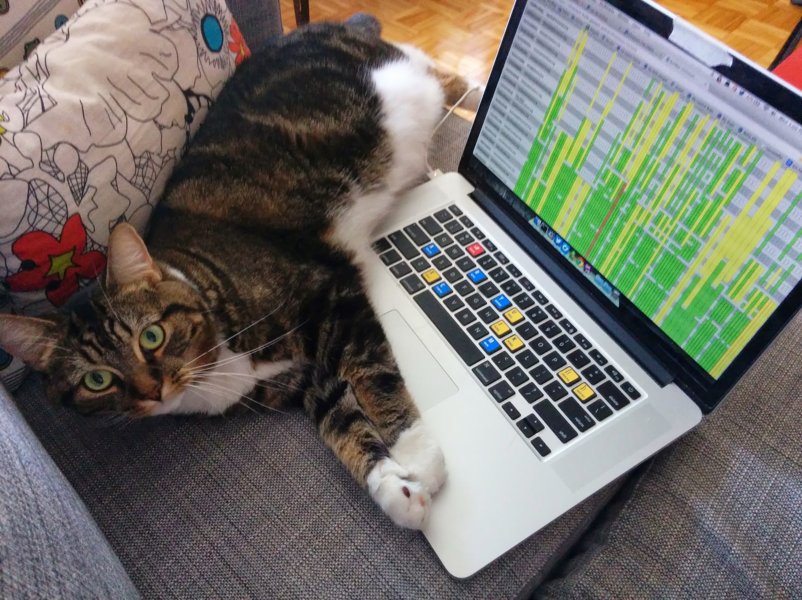

<link rel="import" href="../../bower_components/polymer/polymer.html">
<link rel="import" href="../../bower_components/iron-pages/iron-pages.html">
<link rel="import"
  href="../../bower_components/iron-flex-layout/classes/iron-flex-layout.html">

<dom-module id="cat-alogue">
  <template>
    <style>
      :host {
        display: block;
      }
      .pic {
        height: 375px;
      }
    </style>
    <iron-pages id="pages" selected="{{selected}}" attr-for-selected="data-cat">
      <section data-cat="pretty">
        
      </section>
      <section data-cat="vacation">
        
      </section>
      <section data-cat="hacker">
        
      </section>
    </iron-pages>
    <div class="controls layout horizontal justified">
      <button on-tap="_goPrev">Prev</button>
      <input type="text" value="{{selected::input}}">
      <button on-tap="_goNext">Next</button>
    </div>
  </template>
  <script>
    Polymer({
      is: 'cat-alogue',
      properties: {
        selected: {
          type: String,
          value: 'hacker'
        }
      },
      _goPrev: function() {
        this.$.pages.selectPrevious();
      },
      _goNext: function() {
        this.$.pages.selectNext();
      }
    });
  </script>
</dom-module>
